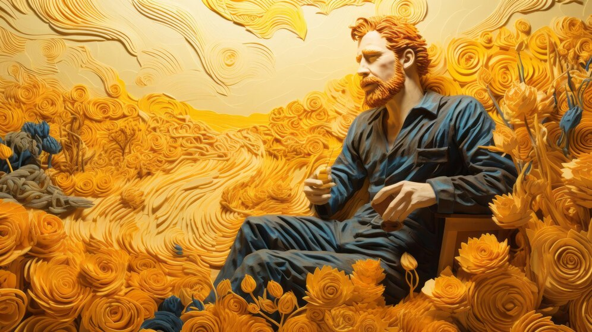
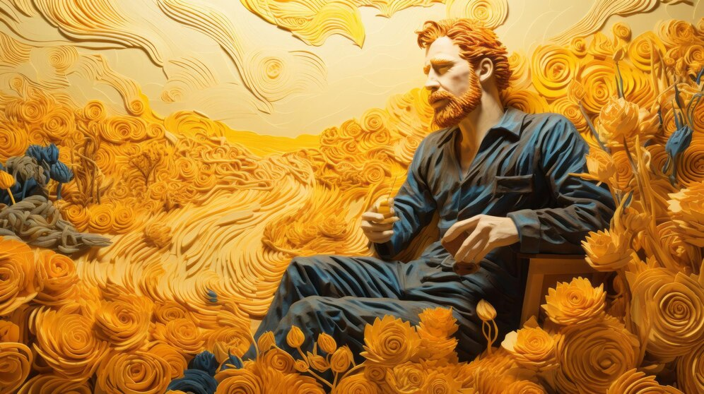

Minha jornada não foi fácil e, ao longo dos anos, a busca por um propósito me levou a caminhos
tortuosos. Antes da arte, tentei ser pastor, tentei ser professor, tentei tantas coisas, mas
nada parecia se encaixar. A pintura foi minha última esperança e, ao mesmo tempo, minha
redenção. Em cada pincelada, eu buscava não só expressar o que via, mas o que sentia — algo
muito mais profundo, uma tentativa de traduzir para o mundo a tempestade dentro de mim.
O sofrimento não me abandonou, mas ele também não me paralisou. Pelo contrário, foi na dor que
encontrei uma forma de compreensão e de conexão com o mundo ao meu redor. Às vezes, tenho a
sensação de que a minha arte surgiu da necessidade urgente de fazer o caos dentro de mim se
tornar algo visível, algo tangível. Minhas cores vibrantes e meus traços fortes, embora muitas
vezes incompreendidos, são a representação de um anseio de liberdade, de um desejo de que o
mundo se abrisse para aquilo que eu realmente era.
Minha arte, apesar de tudo, é um reflexo de uma vida em busca de significado, de luz em meio à
escuridão. E talvez, apenas talvez, essa busca, esse olhar implacável sobre a vida, tenha sido
minha maior obra de arte.
 
